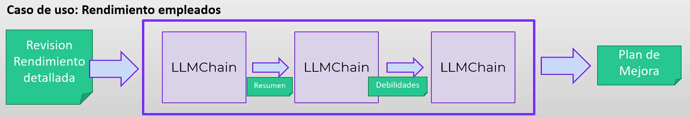
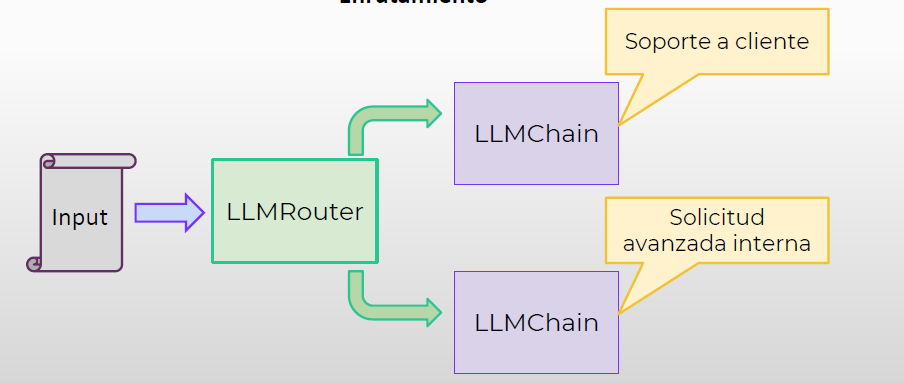

3. Introducción a las cadena en LangChain.#
En este capítulo vamos a contemplar los siguientes aspectos:
¿Cómo crear cadenas para construir aplicaciones complejas?
¿Cómo crear un modelo secuencial para combinar cadenas?
¿Cómo enrutar a la mejor cadena?
¿Cómo crear cadenas avanzadas de transformación y preguntas/respuestas sobre nuestros datos vectorizados?
3.1. Cadenas de forma secuencial.#
Las cadenas nos permiten combinar múltiples componentes para crear una aplicación única y coherente. Por ejemplo, podemos crear una cadena que tome la entrada del usuario , la formatee con PromptTemplate y luego pase la respuesta formateada a un LLM . Podemos construir cadenas más complejas combinando varias cadenas o combinando cadenas con otros componentes, por tanto, las cadenas nos permite vincular la salida de una llamada LLM con la entrada de otra llamada LLM.
Las cadenas tienen un componente básico conocido como objeto LLMChain . Podemos pensar en LLMChain como una simple llamada a LLM que tendrá una entrada (normalmente el prompt o solicitud) y una salida (el resultado).
Si encadenamos varios LLMChain podemos tener un modelo secuencial, el modelo secuencial simple tiene solo 1 entrada global y 1 salida global, no nos proporciona los resultados intermedios. Cada objeto LLMChain intermedio solo tiene 1 entrada y 1 salida, por tanto la salida de 1.
El tema de manejo de cadenas en LangChain, lo podemos encontrar en el siguiente enlace:
https://python.langchain.com/v0.1/docs/modules/chains/
Veamos a continuación un ejemplo de cadena secuencial
import langchain
from langchain_openai import ChatOpenAI
from langchain.prompts import PromptTemplate, SystemMessagePromptTemplate,ChatPromptTemplate, HumanMessagePromptTemplate
chat = ChatOpenAI(
model="llama3.2",
base_url = 'http://localhost:11434/v1',
api_key='ollama', # required, but unused,
)
3.2. Creación de un objeto de tipo LLMCahain.#
Veamos a continuación cómo se construyen estos objetos
human_message_prompt = HumanMessagePromptTemplate.from_template(
"Dame un nombre de compañía que sea simpático para una compañía que fabrique {producto}"
)
chat_prompt_template = ChatPromptTemplate.from_messages([human_message_prompt])
from langchain.chains import LLMChain
chain = LLMChain(llm=chat, prompt=chat_prompt_template)
print(chain.invoke(input="Lavadoras"))
Como vemos la ejecución del código anterior nos devuelve un warning, indicando que en un futuro esa construcción no se va a permitir. En concreto el warning recibido es el siguiente:
LangChainDeprecationWarning: The class `LLMChain` was deprecated in LangChain 0.1.17 and will be removed in 1.0. Use :meth:`~RunnableSequence, e.g., `prompt | llm`` instead.
chain = LLMChain(llm=chat, prompt=chat_prompt_template)
Esto lo podemos ver en la documentación de Langchain, en este enlace:
https://api.python.langchain.com/en/latest/chains/langchain.chains.llm.LLMChain.html
A continuación procedemos a modificar las instrucciones anteriores para adaptarlas a lo que será permitido en el futuro
chain = chat_prompt_template | chat
print(chain.invoke(input="Lavadoras"))
3.3. Cadena secuencial simple.#
Veamos a continuación un ejemplo de concatenación de cadenas simples, en el sentido de que el resultado de una cadena es utilizado para ejecutar la siguiente.
from langchain.chains.sequential import SimpleSequentialChain
llm = ChatOpenAI(
model="llama3.2",
base_url = 'http://localhost:11434/v1',
api_key='ollama', # required, but unused,
)
template = "Dame un simple resumen con un listado de puntos para un post de un blog acerca de {tema}"
prompt1 = ChatPromptTemplate.from_template(template)
chain_1 = LLMChain(llm=llm,prompt=prompt1)
template = "Escribe un post completo usando este resumen: {resumen}"
prompt2 = ChatPromptTemplate.from_template(template)
chain_2 = LLMChain(llm=llm,prompt=prompt2)
full_chain = SimpleSequentialChain(chains=[chain_1,chain_2],
verbose=True) #verbose=True nos irá dando paso a paso lo que hace, pudiendo ver los resultados intermedios
Ahora vamos a introducir como primer parámetro “Inteligencia Artifical”, entonces en base a la primera cadena nos devolverá una serie de conceptos sobre esta materia y esta salida alimentará a la segunda cadena para obtener el resultado final
result = full_chain.invoke(input="Inteligencia Artificial")
print(result['output'])
3.4. Construcción modelo secuencial completo.#
Este tipo de cadenas, son muy similares a las vistas en el anterior apartado, pero ofrecen la ventaja de que nos permiten tener acceso a todas las salidas del LLMChains internas. Para ver su funcionamiento, vamos a ver un caso de uso de rendimiento de empleados.
Imaginemos que estamos en el departamento de recursos humanos y queremos hacer un plan de mejora para todas las funciones que tiene cada uno de los empleados de la empresa. Lo que tendremos de partida es una revisión del rendimiento del empleado y vamos a considerar un modelo secuencial completo. En el primer bloque de LLMcahin, se va a especializar en obtener un resumen a partir de la revisión que tenemos como entrada, el siguiente bloque va a estar especializado en detectar las debilidades a partir del resumen anterior y por último se nos va a proporcionar un plan de mejora basándose en las debilidades que se han detectado. Esto se hará para todos los empleados de la plantilla de una manera casi totalmente automática.
El esquema de este proceso se muestra en la siguiente figura: 
Veamos cómo implementamos esto mediante código
from langchain.prompts import PromptTemplate, SystemMessagePromptTemplate,ChatPromptTemplate, HumanMessagePromptTemplate
from langchain_openai import ChatOpenAI
from langchain.chains import SequentialChain, LLMChain #importamos el SequentialChain que es el modelo completo
llm = ChatOpenAI(
model="llama3.2",
base_url = 'http://localhost:11434/v1',
api_key='ollama', # required, but unused,
)
Creamos la primera cadena. El parámetro va a ser “revision_rendimiento”. Establecemos un output_key, esto es importante proque así tenemos un acceso directo al resultado que obtenemos de esta cadena.
template1 = "Dame un resumen del rendimiento de este trabajador:\n{revision_rendimiento}"
prompt1 = ChatPromptTemplate.from_template(template1)
chain_1 = LLMChain(llm=llm,
prompt=prompt1,
output_key="resumen_revision")
#Opciones objetos runnables: chain_1= prompt1 | llm
El output_key que aquí utilizamos va a ser utilizado como entrada de la siguiente cadena. Ahora creamos la segunda cadena (chain2). En este caso el parámetro que utilizamos en el template2, tiene que llamarse exactamente igual que como se ha denominado al output_key establecido en el paso anterior. En este segunda eslabón a la salida la llamamos debilidades.
template2 = "Identifica las debilidades de este trabajador dentro de de este resumen de la revisión:\n{resumen_revision}"
prompt2 = ChatPromptTemplate.from_template(template2)
chain_2 = LLMChain(llm=llm,
prompt=prompt2,
output_key="debilidades")
#Opciones objetos runnables: chain_2= prompt2 | llm
Pasamos ahora al paso tres. Para el caso del parámetro de ete paso cabe decir lo mismo que se ha comentado anteriormente.
template3 = "Crea un plan de mejora para ayudar en estas debilidades:\n{debilidades}"
prompt3 = ChatPromptTemplate.from_template(template3)
chain_3 = LLMChain(llm=llm,
prompt=prompt3,
output_key="plan_mejora")
#Opciones objetos runnables: chain_3= prompt3 | llm
Creamos ahora el secuentialchain.
seq_chain = SequentialChain(chains=[chain_1,chain_2,chain_3],
input_variables=['revision_rendimiento'],
output_variables=['resumen_revision','debilidades','plan_mejora'],
verbose=True)
Vamos a crear la variable de entrada, que para este ejemplo simplemente es una variable tipo carácter con un determinado valor. En la práctica esto puede ser una llamada a una base de datos interna o una base de datos vactorial.
revision_rendimiento_empleado = '''
Revisión de Rendimiento del Empleado
Nombre del Empleado: Juan Pérez
Posición: Analista de Datos
Período Evaluado: Enero 2023 - Junio 2023
Fortalezas:
Juan ha demostrado un fuerte dominio de las herramientas analíticas y ha proporcionado informes detallados y precisos que han sido de gran ayuda para la toma de decisiones estratégicas. Su capacidad para trabajar en equipo y su disposición para ayudar a los demás también han sido notables. Además, ha mostrado una gran ética de trabajo y una actitud positiva en el entorno laboral.
Debilidades:
A pesar de sus muchas fortalezas, Juan ha mostrado áreas que necesitan mejoras. En particular, se ha observado que a veces tiene dificultades para manejar múltiples tareas simultáneamente, lo que resulta en retrasos en la entrega de proyectos. También ha habido ocasiones en las que la calidad del trabajo ha disminuido bajo presión. Además, se ha identificado una necesidad de mejorar sus habilidades de comunicación, especialmente en lo que respecta a la presentación de datos complejos de manera clara y concisa a los miembros no técnicos del equipo. Finalmente, se ha notado una falta de proactividad en la búsqueda de soluciones a problemas imprevistos, confiando a menudo en la orientación de sus superiores en lugar de tomar la iniciativa.
'''
results = seq_chain.invoke(revision_rendimiento_empleado)
results #Tenemos un diccionario con todos los resultados intermedios y final
#Resultado final
print(results['plan_mejora'])
También podemos tener los resultados de los pasos anteriores
#Se puede accceder a los resultados intermedios:
print(results["debilidades"])
3.5. Enrutamiento a cadenas con LLMRouterChain.#
LLMRouterChains puede recibir una entrada y redirigirla a la secuencia LLMChain más apropiada.
El enrutador acepta múltiples LLMChains de destino potencial y luego, a través de un mensaje especializado, el enrutador leerá la entrada inicial y generará un diccionario específico que coincida con una de las posibles cadenas de destino para continuar con el procesamiento.

Veamos el siguiente caso de uso
from langchain.prompts import PromptTemplate, SystemMessagePromptTemplate,ChatPromptTemplate, HumanMessagePromptTemplate
from langchain_openai import ChatOpenAI
from langchain.chains import SequentialChain, LLMChain #importamos el SequentialChain que es el modelo completo
llm = ChatOpenAI(
model="llama3.2",
base_url = 'http://localhost:11434/v1',
api_key='ollama', # required, but unused,
)
3.5.1. Plantillas de enrutamiento#
Generamos dos plantillas de enrutamiento. La primera plantilla sería para un soporte básico a clientes de coches. La seguna plantilla sería para crear el perfil del mecánico.
#Template (prompt) para soporte básico a clientes de coches
plantilla_soporte_basico_cliente = '''Eres una persona que asiste a los clientes de automóviles con preguntas básicas que pueden
necesitar en su día a día y que explica los conceptos de una manera que sea simple de entender. Asume que no tienen conocimiento
previo. Esta es la pregunta del usuario/n{input}'''
#Template (prompt) para soporte avanzados a nuestros expertos en mecánica
plantilla_soporte_avanzado_mecánico = '''Eres un experto en mecánica que explicas consultas avanzadas a los mecánicos
de la plantilla. Puedes asumir que cualquier que está preguntando tiene conocimientos avanzados de mecánica.
Esta es la pregunta del usuario/n{input}'''
De manera similar, se podrían añadir tantas plantillas como necesitemos.
Ahora creamos el enrutamiento de los prompts, que como podemos ver es una lista de diccionarios.
#Debemos crear una lista de diccionarios, cada diccionario contiene su nombre, la descripción (en base a la cual el enrutador
#hará su trabajo) y el prompt a usar en cada caso
prompt_infos = [
{'name':'mecánica básica','description': 'Responde preguntas básicas de mecánicas a clientes',
'prompt_template':plantilla_soporte_basico_cliente},
{'name':'mecánica avanzada','description': 'Responde preguntas avanzadas de mecánica a expertos con conocimiento previo',
'prompt_template':plantilla_soporte_avanzado_mecánico},
]
3.5.2. Creación de ConversationChain.#
from langchain.chains import LLMChain
#Creamos un diccionario de objetos LLMChain con las posibles cadenas destino
destination_chains = {}
for p_info in prompt_infos:
name = p_info["name"]
prompt_template = p_info["prompt_template"]
prompt = ChatPromptTemplate.from_template(template=prompt_template)
chain = LLMChain(llm=llm, prompt=prompt)
destination_chains[name] = chain
#diccionario de bloques LLMChains
destination_chains
#Creamos el prompt y cadena por defecto puesto que son argumento obligatorios que usaremos posteriormente
default_prompt = ChatPromptTemplate.from_template("{input}")
default_chain = LLMChain(llm=llm,prompt=default_prompt)
Creamos ahora el Multi Routing Template
#Importamos una plantilla que podremos formatear su parámetro {destinations} que tendrá cada nombre y descripción de la información de prompts
from langchain.chains.router.multi_prompt_prompt import MULTI_PROMPT_ROUTER_TEMPLATE
print(MULTI_PROMPT_ROUTER_TEMPLATE) #El parámetro importante es {destinations}, debemos formatearlo en tipo string
Vamos a establecer todos los posibles destinos del Routing.
#Creamos una string global con todos los destinos de routing usando el nombre y descripción de "prompt_infos"
destinations = [f"{p['name']}: {p['description']}" for p in prompt_infos]
destinations_str = "\n".join(destinations)
# Veamos el contenido de esta variable que contiene todos los posibles destinos
destinations_str
3.5.3. Router Prompt#
from langchain.chains.router.llm_router import LLMRouterChain,RouterOutputParser
router_chain = LLMRouterChain.from_llm(llm, router_prompt)
router_template = MULTI_PROMPT_ROUTER_TEMPLATE.format(
destinations=destinations_str #Formateamos la plantilla con nuestros destinos en la string destinations_str
)
router_prompt = PromptTemplate(
template=router_template,
input_variables=["input"],
output_parser=RouterOutputParser(), #Para transformar el objeto JSON parseándolo a una string
)
print(router_template) #verificamos que se ha formateado correctamente
3.5.4. Routing Chain Call#
from langchain.chains.router import MultiPromptChain
chain = MultiPromptChain(router_chain=router_chain,
destination_chains=destination_chains, #El objeto con los posibles LLMChain que creamos al inicio
default_chain=default_chain, verbose=True #Indicamos el LLMChain por defecto (obligatorio)
)
# Vemos que el enrutamiento es correcto y se va al apartado del mecánica básica
chain.invoke("¿Cómo cambio el aceite de mi coche?")
# Vemos que el enrutamiento es correcto y se va al apartado del mecánico
chain.invoke("¿Cómo funciona internamente un catalizador?")
3.6. Cadenas de transformación.#
Las “ TransformChain “ se refieren a un tipo específico de cadena de transformación que se utiliza para modificar, manipular o transformar datos en el proceso de construcción de aplicaciones basadas en modelos de lenguaje.
Diferentes ejemplo pueden ser los siguientes:
Normalización de texto: Limpiar y estandarizar el texto de entrada para asegurar consistencia.
Formateo: Cambiar el formato del texto para adaptarlo a necesidades específicas.
Filtrado: Eliminar información innecesaria o irrelevante.
El caso de uso que vamos a implementar es un ejemplo de resumir y traducir.
Vamos a obtener información de la wikipedia y lo vamos a meter en un modelo secuencial. Haremos los siguientes pasos:
1.- Tomamos la información que nos llega de wikipedia y lo transformamos sin necesidad de llamar a ningún LLM, con el consiguiente ahorro de costes.
2.- Implementamos una cadena LLM que va a resumir lo del paso anterior.
3.- Por ultimo vamos a traducir el texto.
Veamos cómo implementar todo esto.
from langchain.prompts import PromptTemplate, SystemMessagePromptTemplate,ChatPromptTemplate, HumanMessagePromptTemplate
from langchain_openai import ChatOpenAI
from langchain.chains import SimpleSequentialChain, LLMChain,TransformChain
llm = ChatOpenAI(
model="llama3.2",
base_url = 'http://localhost:11434/v1',
api_key='ollama', # required, but unused,
)
# importamos los documentos
from langchain.document_loaders import WikipediaLoader
consulta_wikipedia = "atlético de Madrid"
idioma_final = "francés"
loader = WikipediaLoader(query=consulta_wikipedia,lang="es",load_max_docs=10)
data = loader.load()
data[0].page_content
texto_entrada = data[0].page_content
Defino la función de transformación personalizada
def transformer_function(inputs: dict) -> dict: #Toma de entrada un diccionario y lo devuelve con la transformación oportuna
texto = inputs['texto']
primer_parrafo = texto.split('\n')[0]
return {'salida':primer_parrafo}
transform_chain = TransformChain(input_variables=['texto'],
output_variables=['salida'],
transform=transformer_function)
#Definimos la cadena secuencial
#Creamos bloque LLMChain para resumir
template1 = "Crea un resumen en una línea del siguiente texto:\n{texto}"
prompt = ChatPromptTemplate.from_template(template1)
summary_chain = LLMChain(llm=llm,
prompt=prompt,
output_key="texto_resumen")
#Creamos bloque LLMChain para traducir
template2 = "Traduce a"+ idioma_final + "el siguiente texto:\n{texto}"
prompt = ChatPromptTemplate.from_template(template2)
#prompt.format_prompt(idioma=idioma_final)
translate_chain = LLMChain(llm=llm,
prompt=prompt,
output_key="texto_traducido")
sequential_chain = SimpleSequentialChain(chains=[transform_chain,summary_chain,translate_chain],
verbose=True)
result = sequential_chain(texto_entrada)
3.7. Cadenas sobre preguntas y respuestas de los datos.#
La cadena “load_qa_chain” se utiliza para cargar y configurar una cadena de preguntas y respuestas (Q&A) A). Esta cadena puede combinar múltiples componentes de procesamiento de lenguaje natural para responder preguntas basadas en un contexto específico sin tener que hacerlo manualmente.
La clave es que proporciona una respuesta directa y coherente de la pregunta realizada a partir de nuestra base de datos de vectores en lugar de únicamente devolver el vector de mayor similitud.
Muy común usarla cuando estamos creando un Retrieval Augmented Generation RAG (Generación Aumentada por Recuperación) para obtener información y respuestas basadas en nuestra propia base de datos de vectores.
El planteamiento es el siguiente:
Tenemos una base de datos vectorial y una pregunta del usuario que va a generar una respuesta, esta respuesta se inserta en la cadena QA_Chain para encadenar esa respuesta con el LLM y así obtener una respuesta coherente.
Veamos un ejemplo, primero importamos y generamos el LLM
from langchain.prompts import PromptTemplate, SystemMessagePromptTemplate,ChatPromptTemplate, HumanMessagePromptTemplate
from langchain_openai import ChatOpenAI
from langchain.chains import SimpleSequentialChain, LLMChain,TransformChain
llm = ChatOpenAI(
model="llama3.2",
base_url = 'http://localhost:11434/v1',
api_key='ollama', # required, but unused,
)
Conectamos a una base de datos creada en uno de los apartados anteriores y que se puede ver en este enlace.
# conectamos a una base de datos creda en uno de los apartados anteriores
from langchain.embeddings.openai import OpenAIEmbeddings
from langchain_community.vectorstores import SKLearnVectorStore
from langchain_ollama import OllamaEmbeddings
embedding_function = OllamaEmbeddings(
model="llama3.2",
)
vector_store_connection = SKLearnVectorStore(embedding=embedding_function, persist_path="./BD/ejemplosk_embedding_db", serializer="parquet")
#Cargamos cadena QA
from langchain.chains.question_answering import load_qa_chain
from langchain.chains.qa_with_sources import load_qa_with_sources_chain #Opción que proporciona también la fuente de datos de la respuesta
chain = load_qa_chain(llm,chain_type='stuff') #chain_type='stuff' se usa cuando se desea una manera simple y directa de cargar y procesar el contenido completo sin dividirlo en fragmentos más pequeños. Es ideal para situaciones donde el volumen de datos no es demasiado grande y se puede manejar de manera eficiente por el modelo de lenguaje en una sola operación.
question = "¿Qué pasó en el siglo de Oro español?"
# Obtengo los párrafos que se adaptan a la pregunta
docs = vector_store_connection.similarity_search(question)
chain.run(input_documents=docs,question=question)
3.8. alternativa con el método invoque.#
#Estructurar un diccionario con los parámetros de entrada
inputs = {
"input_documents": docs,
"question": question
}
chain.invoke(inputs)["output_text"]